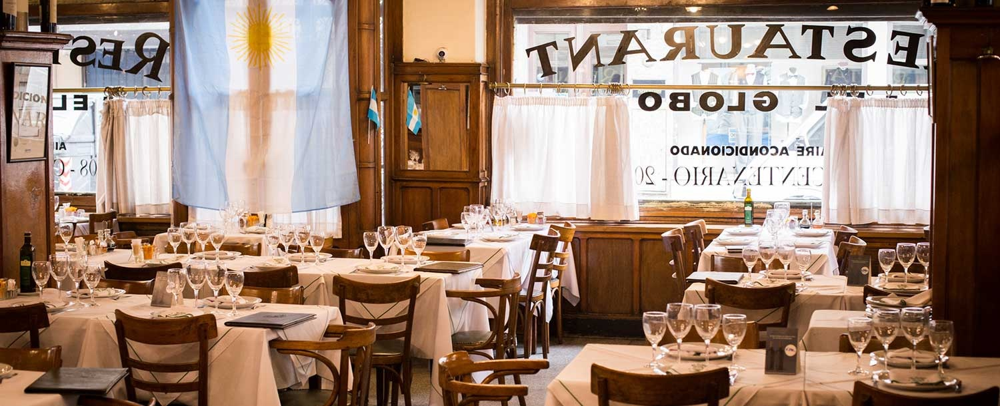

Se encuentra ubicado en el centro de la Ciudad de Buenos Aires, donde la calidad y calidez se funden para vivir un momento diferente. Siempre ofreciendo lo mejor en almuerzos ejecutivos, cenas familiares y otros eventos, dentro de un marco de históricas construcciones, todo ello mientras disfrutas de la vista a un sereno patio porteño y un tradicional jardín. Un punto de encuentro para amantes del vino, que con la excusa de un almuerzo o cena se reúnen en este restaurante histórico de Buenos Aires. Cada semana renueva su menú porteño para rendir homenaje a la historia y a los platos emblemáticos de nuestra ciudad, en el lugar donde pasaron dieciséis presidentes constitucionales. Desde las mañanas con Desayunos, Brunch, al mediodía con almuerzos, propuestas especiales de la hora del Té, las meriendas de la tarde para reencontrarse y las cenas desde nuestro Jardín a cielo abierto y el Patio en Planta baja de nuestro Club. También ofrecemos un Menú Online Detallado de Delivery de Comidas y Empanadas a Domicilio, para que puedas volver a conectarte con los sabores auténticos. Abierto todos los días De Lunes a Viernes, Sábados, Domingos y Feriados.